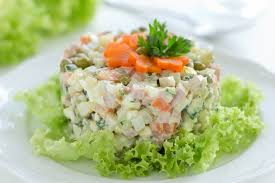

Ensalada de Gallina

La ensalada de gallina, es una plato típico venezolano
que junto a la hallaca, pernil y pan de jamón conforman el plato navideño
Es una ensalada que se puede preparar en cualquier época del año, es una invitada especial
en los cumpleaños cuyo acompañante será un pacinto de banquete(pan tipo viena mas pequeño que
una salchicha)
INGREDIENTES
- 1 Kilo de papas
- 1 Kilo de zanahoria
- 1 lata de guisantes
- 1/2 gallina o pollo
- 2 dientes de ajo
- 1 pimiento rojo
- 1 cebolla
- Sal
- Mayonesa
- Mostaza
- Aceite
Pasos
- En una olla hervir el pollo con sal al gusto, dos dientes ajo y la cebolla picadita
- Listo el pollo, dejelo enfriar y luego lo mechar el pollo
- Lavar y pelar papas y picarlas en cubos. Una vez que el pollo este listo puede hervir las papas en esa agua.
De lo contrario, en una olla con agua limpia coloque las papas con sal al gusto, a hervir hasta que esten blandas
- Lavar y pelar las zanahorias y picarlas en cubos. En una olla hevir hasta que esten blandas
- Listas las papas y zanahorias dejelas reposar
- Mezclarlos en forma envolvente y añadir un chorrito de aceite, mayonesa y un toque de mostaza
- Luego en bol, coloque el pollo, papas, zanahoria, los guisantes
- Calentar a fuego medio suficiente aceite en una sartén u olla profunda. El aceite debe estar bien caliente sin llegar a quemarse.
- Deja de revolver la ensalada y pica el pimiento en cubitos muy chiquitos, toma un sartén añade aceite, espera a que este caliente
coloque el pimiento, una cucharadita de sal, dejar dorar y verter en la ensalada
- Volver a meclar, consiga su punto exacto de sal al gusto
- Decore con unas tiritas de pimiento arriba del bol
- Eso es todo. !Buen provecho!